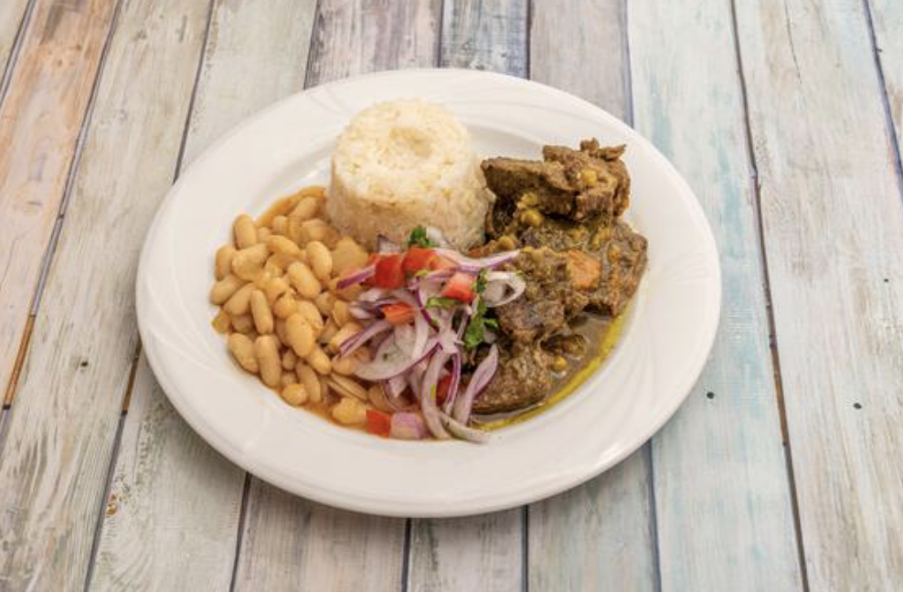

Seco de Carne

Seco de Carne is a one of the most popular recipes of Peruvian cuisine and one of the the most popular in the country.
When one thinks about the traditional "comida criolla", this dish is one of the first ones that come to mind. Criolla refers to the typical food from the coastal region of the country.
The roots of this dish comes from the Arab influence that the Spanish brought with them during colonial times. The main ingredient in this dish is cilantro and due to that it has a very strong,
intense and delicious flavor. It is very important to let the meat and vegetables simmer over medium-low heat, so it can absorb the flavors and get a fork tender texture.
Approximate preparation time = 25 minutes
Approximate cooking time = 120 minutes
Ingedients
- 3-4 cups cilantro leaves
- 2 cups spinach
- 1/2 cup vegetable oil
- 1(1/2) lbs boneless beef chuck roast (cut into 2x2 inch pieces)
- 1 chopped red onion
- 1 whole garlic (minced)
- 1 tbsp aji amarillo paste
- 2 potatoes (cooked and cut into8 parts each)
- 3/4 cup green peas
- 3/4 cup diced carrots
- salt & pepper
- choice of rice (optional)
Steps
- Add the cilantro and spinach into a blender with 1 cup of water (or vegetable broth if you have it).
- Heat oil in a saucepan over high heat and when it is very hot sear the beef pieces until they are golden brown.
- Add the onions, garlic and aji amarillo paste to the saucepan, stir and let it cook until the onions are soft and translucent.
- Pour the contents of the blender into the pan and turn heat to medium. Stir constantly until the liquid evaporates.
- Add one tbsp of oil to fry herbs if necessary. The sauce will change to a dark green color as it cooks.
- Pour 6 cups of water and simmer over medium-low heat for 2 hours with the lid on. More water will be added when necessary.
- Poke the meat with a fork and check to see that it is tender. Now add the potatoes, green peas, carrots, salt and pepper to taste.
- Cook uncovered for 15 minutes or until the vegetables are tender.
- Dish is complete once the vegetables have cooked and the sauce has been reduced.
- Serve with rice and canary beans.
Return to Main Page